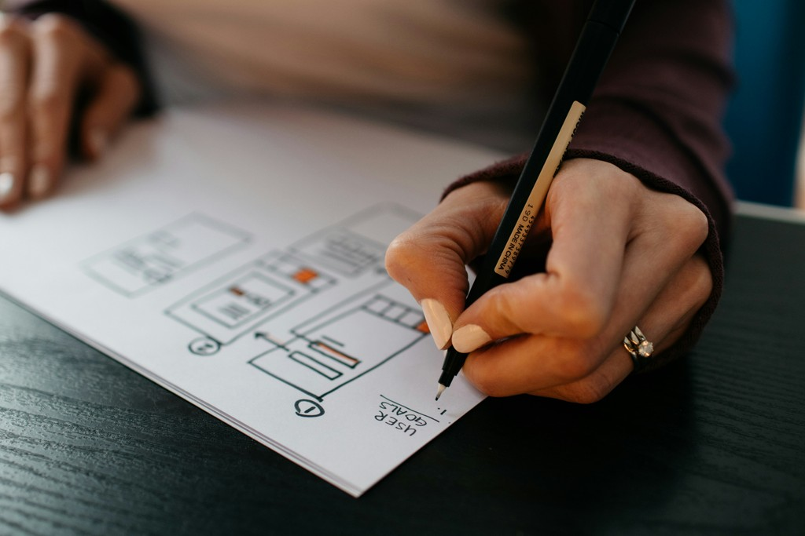

How Can Designers Prepare for the Future?

Last month, I had the chance to attend CSS Day in Amsterdam, a two day event split between a “UI day” focusing on the intersection of design and development and a “CSS day”, with speakers who covered more in-depth, technical CSS subjects. The talks were as diverse as the background of the speakers themselves, but there was one common thread: In this era of rapid change, are we, as product people, equipped to design for automation, machine learning, and AI?
What does automation mean for designers?
It's hard to work on a product team that hasn’t automated some part of their workflow in the name of productivity. If machines can take care of the repeatable tasks and heavy lifting, designers can focus on doing more meaningful work. But how does this affect the way we use the work being created by machines?
Josh Clark, founder of design studio Big Medium, provoked the audience with this very question during his talk, ‘A.I. is your New Design Material’. Some of the most impressive advancements in recent technology are things like facial recognition, predictive text, and image search, all powered by machine learning. But it's important to remember—all of these technologies are still built on code. The upside is less room for error. No real emotions, expectations, or feelings get in the way of the job it was designed to do.
Yet, as humans, we assume that when facial recognition fails, the whole process is inherently flawed. But was it really?
According to Josh, that is the most fundamental thing to understand when it comes to machines. Not meeting our human expectations doesn’t automatically make the technology itself a failure. These things were, by definition, built on logic, which begs the question: Can a robot's solution actually be wrong?
The point of introducing machine learning into our products was never to have them do all the work. Instead, algorithms and logic-based solutions ought only provide humans with better insight so as to empower us to arrive at better solutions, faster.
This fundamental understanding of our users is what really helps us make better products. If a computer can figure out how to walk on its own, maybe it's time to start investigating why and how these solutions were formed.
How do we design for the unknown future?
Jared Spool, Co-Founder of UIE asks, “What was the most important thing you learned yesterday, and how will it impact what you do in the future?”
As designers and researchers, we essentially always need to think about how we design products for the future, even as we’re meeting the demands of present day design. A tall order, especially when things move as fast as they have been over the last decade.
To start, Jared advocates for looking back at the ways in which our design processes have already changed. Remember when UX/UI wasn't a priority for many companies? Studying how UX and UI evolved gives us a clearer signal for where these disciplines are headed—toward what Jared describes as "The UX Tipping Point," where an organization fully embraces user experience across everything it builds.
Are we designing for users or ourselves?
People don't always know what they want, even if they think they do. As Joe Leech, a UX psychologist says, "People want more choices, but can't deal with them.”
So how do we design for our users, if our users aren’t always telling us the truth? Back in the 2000s, psychologists Sheena Iyengar and Mark Lepper ran a study regarding consumer choices at a supermarket offering 6 varieties of jam one week and 30 varieties the next. More jam was sold during the week with only 6 choices—even though shoppers said they preferred the week with 30.
Using this analogy, Joe makes a compelling point: understanding psychology is foundational to great design. User research across diverse contexts helps teams get close to the root of users' real needs over their stated wants—forming the foundation for true UX.